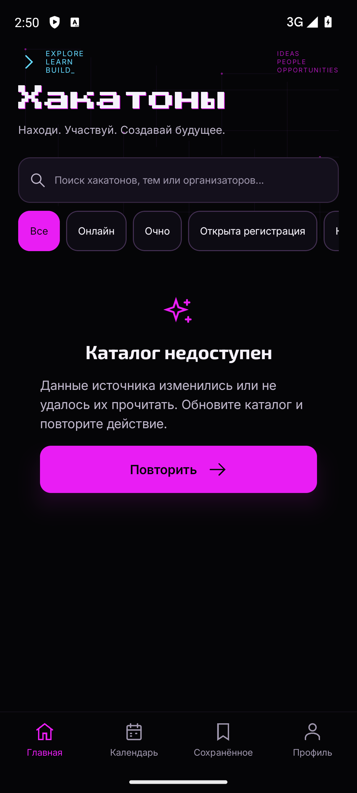
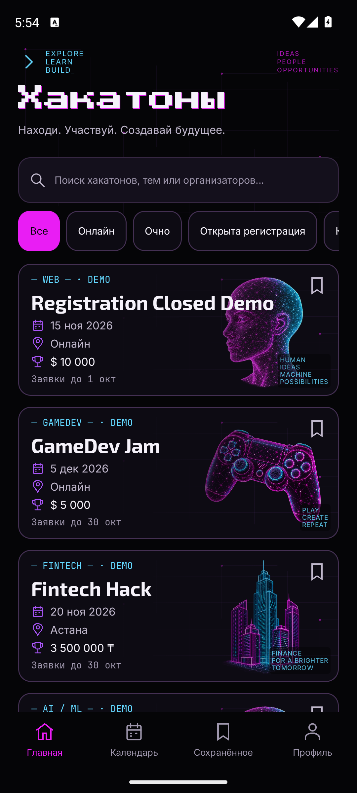
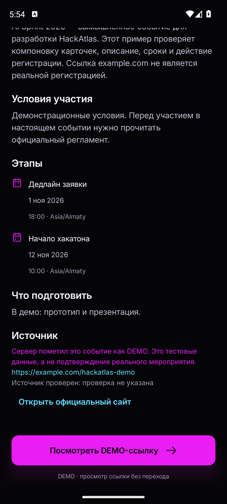
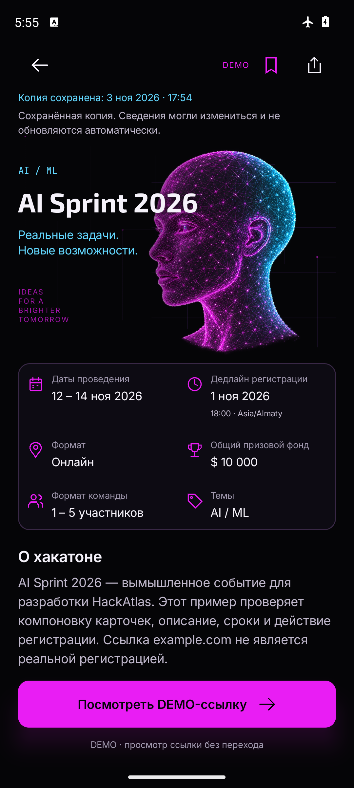
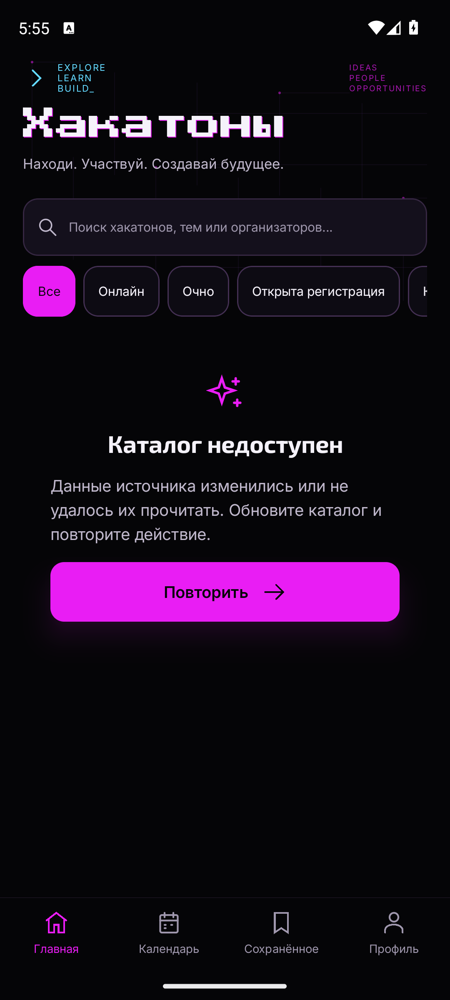
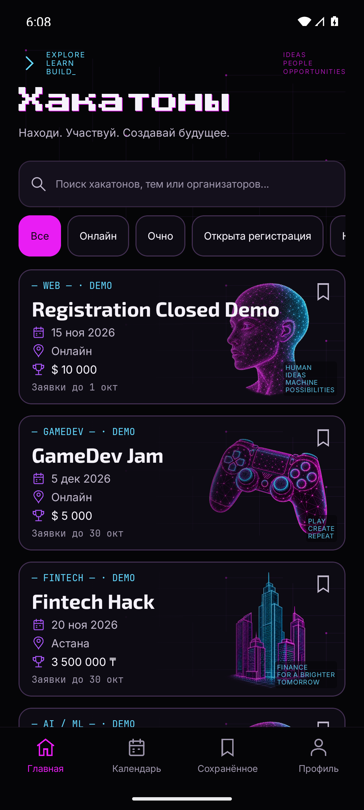
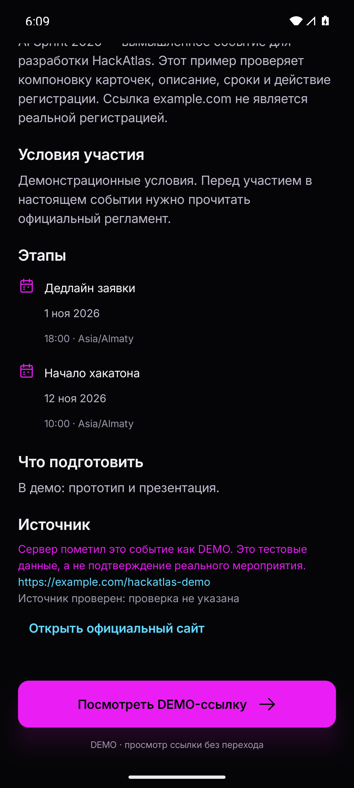
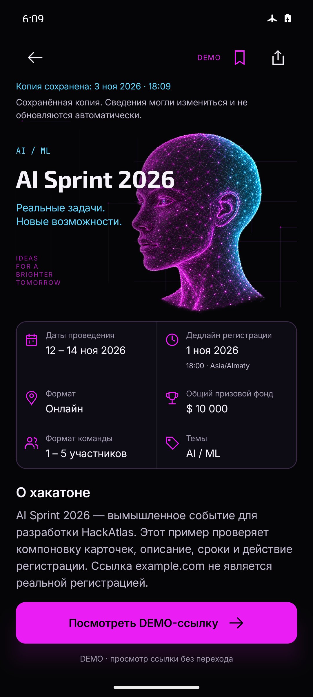
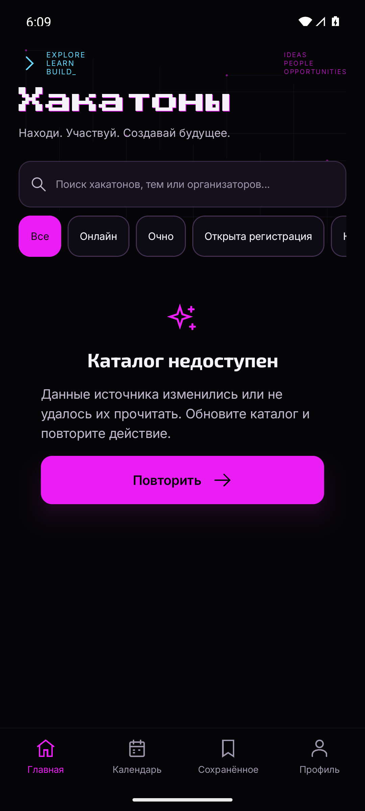

API34/2023a: старый APK отклоняет валидную дату; исправленный открывает каталог. Новый APK:4/4 API34 и4/4 API36. Те же валидные HTTP байты; API и дизайн прежние.
236 tests, debug/lint/release gate, contract validation PASS. Native: loopback read-only HTTP replay Starter DEMO fixtures, не live backend. iOS не собирался.
Проверки/SHA · Команды/ограничения · Итоговое ревью · Неполные ранние попытки · PR · Commit/push
Итоговое независимое ревью:0 Critical/Important/Minor.








